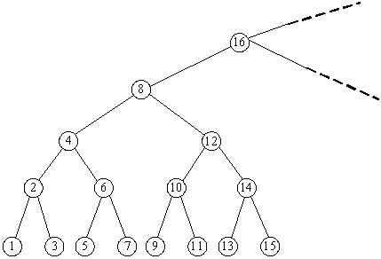

原始题面
Description
Consider an infinite full binary search tree (see the figure below), the numbers in the nodes are 1, 2, 3, … In a subtree whose root node is X, we can get the minimum number in this subtree by repeating going down the left node until the last level, and we can also find the maximum number by going down the right node. Now you are given some queries as “What are the minimum and maximum numbers in the subtree whose root node is X?” Please try to find answers for there queries

Input
In the input, the first line contains an integer N, which represents the number of queries. In the next N lines, each contains a number representing a subtree with root number X ()
Output
There are N lines in total, the i-th of which contains the answer for the i-th query
Sample Input
2
8
10
Sample Output
1 15
9 11
Source
POJ Monthly,Minkerui
题意简述
给出, 输出在满二叉搜索树(如下图)中, 以为根的子树中的最小节点编号和最大节点编号
解题思路
在上图中随便找几个例子就能发现
最小节点编号即为根编号对应二进制位中将最低位的
1换为0后+1的值如:
12 -> 1100和10 -> 1010, 对应的最小节点编号均为9 -> 1001最大节点编号即为根编号对应二进制位中将最低位的
1后面的0全部变为1的值如:
12 -> 1100和14 -> 1110, 对应的最大节点编号均为15 -> 1111
证明是很容易的
对于取最低位1, 有一个运算想必是我们非常熟悉的, 就是lowbit(x), 答案和它密切相关
设给定节点编号为x, 则
- 最小节点编号即为
x - lowbit(x) + 1 - 最大节点编号即为
x + lowbit(x) - 1
代码参考
Show code
1 | /* |